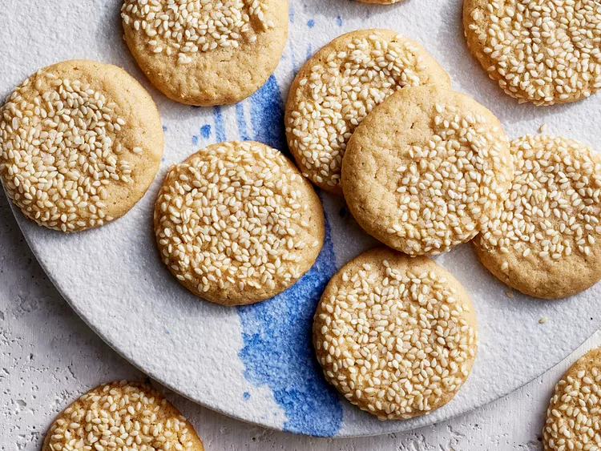

Tahini Butter Cookies

Description:
These tahini butter cookies melt in your mouth, with nutty, savory notes from tahini.
Ingredients:
- 3/4 cup butter, softened
- 1 cup tahini (sesame seed paste)
- 3/4 cup packed brown sugar
- 1 tablespoon vanilla extract
- 1 teaspoon baking powder
- 1/2 teaspoon salt
- 2 cups of all-purpose flour
- 1/4 cup sesame seeds (optional)
Steps:
- Mix butter and tahini in a large bowl with an electric mixer at medium speed until combined, about 30 seconds. Add brown sugar, vanilla, baking powder, and salt. Mix at medium speed, scraping sides of bowl as needed, 1 minute. Stir in flour until combined. Chill, covered, at least 2 hours or up to 12 hours.
- Preheat the oven to 350 degrees F (180 degrees C). Line 2 (10x15-inch) baking sheets with parchment paper. Place sesame seeds in a small bowl.
- Roll dough into 1 1/4-inch balls. Dip tops of balls in sesame seeds to lightly coat; arrange 1 1/2 inches apart on prepared baking sheets.
- Bake in the preheated oven until bottoms are light brown, about 12 minutes. Let cool on cookie sheets 2 minutes. Transfer cookies to wire racks; let cool completely. Store cookies in an airtight container at room temperature up to 5 days.
Home